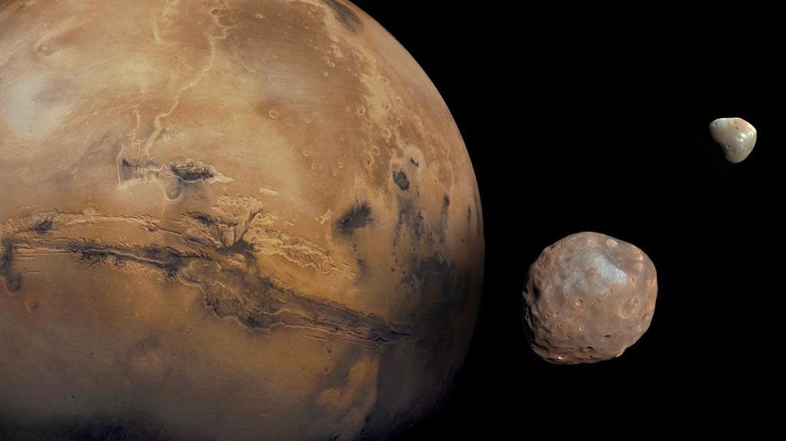

Index
Mercury
Venus
Earth
Mars
Jupiter
Saturn
Uranus
Neptune

Mars
Mars is one of the four rocky planets in the solar system. It's known as the Red Planet due to the rusty iron on its surface. This planet has left scientist with multiple questions about life possibly existing on other planets.
Facts
- Mars has two moons named Phobos and Deimos.
- A day on Mars is very similar to a day on Earth, with a day on Mars lasting 24.6 hours.
- However, a year on Mars is very different from a year on Earth. A year on Mars is 687 Earth days.
- Mars has the largest volcano and mountain in the solar system. Mars has a volcano called the Olympus Mons which is almost 3x the height of Mt. Everest!
- Lots of scientists are interested in looking for signs about whether life existed in the past, when Mars was warmer and possibly covered in water. They also want to know if Mars could ever support life in the future.
- Although temeperatures on Mars can go as high as 70° F, it can also get as cold as -225° F because of its thin atmosphere.
- The Sun's color appears blue in Mar's atmosphere.
- There are signs of ancient floods on Mars, but the water on Mars now mostly exists in icy dirt or thin clouds.
- Mars is named after the Roman god of War.
Learn more about Mars Here
NASA/JPL-Caltech/GSFC/Univ. of Arizona